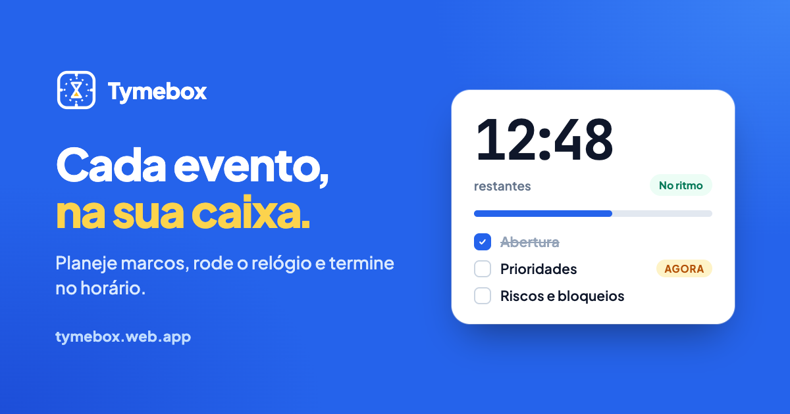

Coisas que eu construí
Feitos para resolver algum problema meu, ou não. Mas sempre por diversão. Todos abertos para usar, e com o código no GitHub.

Tymebox
Cada evento, na sua caixa.
Organiza reuniões e eventos em caixas de tempo: você planeja os marcos, roda a contagem regressiva, termina no horário e depois vê exatamente como foi.
- A contagem compara seu ritmo com o plano e avisa quando você está atrasando
- Modelos prontos para planning, retro e 1:1
- Relatório no final para enviar a quem participou

Bat Hunter
Morcego demais. Hora de derrubar alguns.
Um jogo de tiro no navegador que nasceu num hackathon: o céu está cheio de morcegos e o objetivo é derrubar o máximo possível, com a melhor mira possível.
- Modo livre, desafio de 60 segundos e partida 1x1 com chat
- No difícil: morcego dourado vale 10, e a coruja tira pontos
- Funciona no computador e no celular

csv→ofx
A fatura do Sicredi, pronta para o seu app de finanças.
Converte o CSV da fatura do cartão de crédito Sicredi num arquivo OFX, pronto para importar no seu app de gestão financeira.
- Lança cada parcela no mês certo
- Mostra um resumo da fatura antes do download
- Tudo roda no navegador: nenhum dado sai do seu computador

Dialogs Valve
Modais e drawers controlados pela URL.
Uma biblioteca open source para React que guarda o estado de modais e drawers na URL. Assim, links diretos, o botão voltar e URLs compartilháveis funcionam sem esforço.
- Funciona com qualquer router: Next.js, React Router, TanStack…
- Vários diálogos empilhados, com proteção por permissão
- Tipagem estrita com TypeScript, publicada no npm